방송통신산업기사 (2002-05-26 기출문제)
1과목: 디지털 전자회로
1. 실리콘 제어 정류소자(SCR)의 전류 - 전압 특성곡선은 어느 것인가?
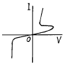
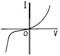
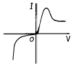
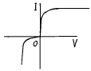
(정답률: 알수없음)

2. 다음 그림의 회로는 무슨 회로인가?
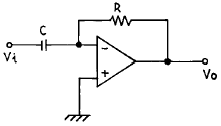
- 미분기
- 적분기
- 가산기
- 증폭기
(정답률: 알수없음)
3. 다음 궤환증폭기의 특성에 관한 설명중 틀리는 것은?
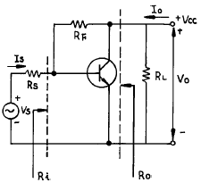
- 궤환으로 입력 임피이던스 Ri는 감소한다.
- 궤환으로 출력 임피이던스 Ro는 감소한다.
- 궤환으로 전류이득 IO/IS는 감소한다.
- RF가 작을수록 출력 전압 VO는 커진다.
(정답률: 알수없음)
4. 논리식 A(A+B+C)를 간단히 하면 어느 값과 같은가?
- 1
- 0
- B+C
- A
(정답률: 알수없음)
5. 다음 카아르노프도의 간략식은?
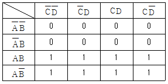
- Y = A
- Y = B
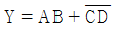
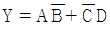
(정답률: 알수없음)
6. 다음의 발진회로에서 L = 10[mH], C1 = C2 = 800[pF]일 때 공진주파수는 약 몇 [kHz]인가?
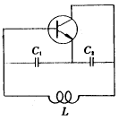
- 10[kHz]
- 20[kHz]
- 40[kHz]
- 80[kHz]
(정답률: 알수없음)
7. 다음은 리플 카운터(ripple counter)이다. 초기 상태 A=0, B=0, C=0 이었다면 클럭 펄스가 12개 인가된 후의 상태는?
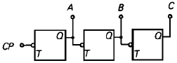
- A=0, B=0, C=1
- A=0, B=1, C=1
- A=1, B=1, C=0
- A=1, B=0, C=0
(정답률: 알수없음)
8. 그림과 같은 회로의 출력 논리식이 아닌 것은?
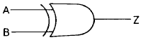
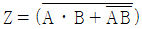
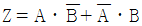
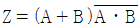
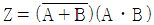
(정답률: 알수없음)
9. 다음 진리표의 Karnaugh map을 작성한 것중 옳은 것은?
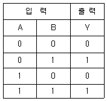
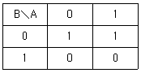
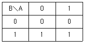
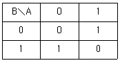
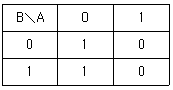
(정답률: 알수없음)
10. 반가산기(Half-adder)의 구성 요소로 맞는 것은?
- JK 플립플롭
- 두개의 AND 게이트
- EOR과 AND 게이트
- 1개의 반동시 회로와 OR 게이트
(정답률: 알수없음)
11. 그림(a)의 회로에 그림(b)와 같은 파형전압을 인가하면 출력 전압파형은?
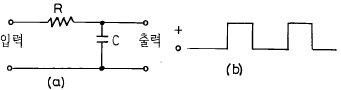
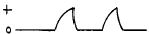
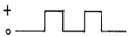
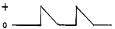
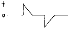
(정답률: 알수없음)
12. 그림과 같은 에미터 저항을 가진 CE 증폭기에서 에미터 저항 RE 의 가장 중요한 역할은 무엇인가?
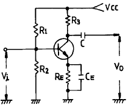
- S(안정계수)를 감소시켜 동작점이 안정된다.
- 주파수 대역을 증가시킨다.
- 바이어스 전압을 감소 시킨다.
- 증폭회로의 출력을 증가시킨다.
(정답률: 알수없음)
13. 주파수 변조방식이 진폭변조방식보다 좋은 점이 아닌 것은?
- S/N비가 개선된다.
- 에코우의 영향이 적다.
- 초단파대의 통신에 적합하다.
- 점유 주파수 대역폭이 좁아 송신효율이 좋다.
(정답률: 알수없음)
14. 트랜지스터 증폭회로에서 저항 R1의 역할은?
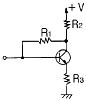
- 입력 임피던스 조절
- 바이어스 안정화
- 부궤환 작용
- 부하저항
(정답률: 알수없음)
15. 다음 그림은 어떤 플립 플롭(Flip-Flop)회로인가?
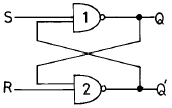
- Basic F-F
- J-K F-F
- D F-F
- T F-F
(정답률: 알수없음)
16. 진폭 변조파의 전압 e(t)가 다음과 같이 표시되었을 때 변조도는 몇[%]인가?
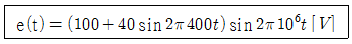
- 80
- 70
- 40
- 20
(정답률: 알수없음)
17. 에미터 접지일 때 전류증폭율이 각각 hFE1, hFE2인 두개의 트랜지스터 Q1과 Q2를 그림과 같이 접속하였을 때의 콜렉터 전류 IC의 크기는?
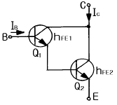
- hFE1ㆍhFE2ㆍIB
- (hFE1ㆍhFE2)ㆍIB
- hFE2(hFE1+1)ㆍIB
- hFE1ㆍIB + hFE2(hFE1+1)ㆍIB
(정답률: 알수없음)
18. 다음 중 직류전원회로의 구성 순서로 옳은 것은?
- 정류회로→ 변압회로→ 평활회로→ 정전압회로
- 변압회로→ 정류회로→ 평활회로→ 정전압회로
- 변압회로→ 평활회로→ 정류회로→ 정전압회로
- 변압회로→ 정류회로→ 정전압회로→ 평활회로
(정답률: 알수없음)
19. Schmitt 트리거회로의 응용 예로 틀린 것은?
- 전압비교회로
- 방형파회로
- 쌍안정회로
- 증폭회로
(정답률: 알수없음)
20. 연속적으로 반복되는 펄스 파형에서 펄스 1개의 "1" 구간이 1[msec]이고, "0" 구간이 1[msec]이다. 이 파형의 주파수는 얼마인가?
- 0.5[KHz]
- 1[KHz]
- 2[KHz]
- 1[MHz]
(정답률: 알수없음)
2과목: 방송통신 기기
21. 마이크(mic)의 종류별 분류가 아닌 것은?
- 전기저항 변화형
- 압전형
- 자기변화형
- 수정발진형
(정답률: 알수없음)
22. TV 방송의 기본원리에 대한 설명 중 가장 올바른 것은?
- 영상을 만들어 내어 전송하고 기록해서 컬러 화면으로 시청하도록 하는 것
- 화상을 화소로 분해하여 전기신호화 하고 이것을 주사방식에 의해 화상신호로 전송하는 것
- 색상, 명도, 포화도 등의 색의 3 속성을 주파수변조 하는 것
- 주사선수 525개를 1,125개로 늘려서 전송하는 것
(정답률: 알수없음)
23. 통신 위성에 탑재되는 중계장치를 무엇이라고 하는가?
- 스위처
- 스크램블러
- 콘버터
- 트랜스폰더
(정답률: 알수없음)
24. TV 영상신호 레벨을 IRE로 표시할 때 휘도신호의 최대값은?
- 50 IRE
- 0 IRE
- 100 IRE
- -40 IRE
(정답률: 알수없음)
25. 디지털스튜디오의 luminance (Y) 색차신호 (CR, CB)의 SAMPLING 신호규격은?
- (4 : 4 : 2)
- (4 : 2 : 1)
- (4 : 2 : 2)
- (4 : 2 : 0)
(정답률: 알수없음)
26. 텔레비젼 방송 신호 변조에 대한 설명으로 옳은 것은?
- 영상신호는 진폭 변조(AM)가 되고 음성신호는 주파수변조(FM)가 된다.
- 영상신호는 주파수 변조(FM)가 되고 음성신호는 진폭변조(AM)가 된다.
- 영상신호와 음성신호 모두 진폭변조(AM)가 된다.
- 영상신호와 음성신호 모두 주파수 변조(FM)가 된다.
(정답률: 알수없음)
27. 위성방송을 위하여 반드시 필요한 시설로 볼 수 없는 것은?
- 이동형 송신국
- 관제 제어국
- 파라보릭안테나 및 저잡음 콘버터
- 송신국
(정답률: 알수없음)
28. 다음중 CATV의 특성과 거리가 먼 것은?
- 다채널로 전문화된 프로그램을 전송할 수 있다.
- 불특정 다수의 시청자를 대상으로 하는 광역방송 (Broadcasting)이다.
- 쌍방향 통신이 가능하므로 시청자가 프로그램의 선택과 제작에 참여할 수 있다.
- 방송서비스외에 원격검침(telemetering), 방범, 방재 등이 이용된다.
(정답률: 알수없음)
29. AM방송에 관한 설명중 옳은 것은?
- 중파를 사용하므로 지표파로 전파 도달거리가 짧다.
- 송신용 안테나로 슈퍼턴스타일 안테나를 사용한다.
- 약전계에서도 전계강도의 변화에 따라 수신감도의 변화가 적다.
- 수신기 회로가 비교적 간단하고 방송역사가 가장 길다.
(정답률: 알수없음)
30. TV 방송 System을 구성하는 장비 가운데 송신소에서만 사용하는 장비는?
- 동기신호 발생기
- VMU
- TSL
- STL
(정답률: 알수없음)
31. CATV 시스템에서 분기단자에 신호를 가했을 때 입력레벨과 간선의 출력 단자에서 나오는 출력레벨과의 차에 의한 손실은?
- 분배손실
- 결합손실
- 단자간 결합손실
- 역결합손실
(정답률: 알수없음)
32. 디지털송신기의 반도체 DEVICE가 아닌것은?
- Bipolar junction TR(BJT's)
- Lateral Diffused Metal Oxide Silicon(LDMOS) FET
- GRIDE DRIVER
- Silicon Carbide Transistors(SiC's)
(정답률: 알수없음)
33. 다음중 TV 주조정실에서 사용되는 방송장비가 아닌 것은?
- VCR/VTR
- Master Switcher
- 방송송출용 Server
- Off-line editor
(정답률: 알수없음)
34. 88 ∼108MHz의 주파수대역에서 주파수 편이량이 15KHz 일때 (a)일반 FM 방송의 변조율과 (b) TV방송국의 음성부문 변조율을 구하면?
- (a) 10% (b) 50%
- (a) 20% (b) 60%
- (a) 30% (b) 70%
- (a) 40% (b) 80%
(정답률: 알수없음)
35. 뉴미디어 방송이 아닌 것은?
- CATV
- 인터넷TV
- 공중파방송
- 위성방송
(정답률: 알수없음)
36. 통신위성의 중계기는 통신방식에 따라 수용채널수가 달라진다. 다음 중 채널을 가장 많이 수용할수 있는 방식은?
- SCPC
- FDMA/FM
- SPADE
- TDMA/DSI
(정답률: 알수없음)
37. 슈퍼헤테로다인 수신기에서 국부 발진기가 동작을 멈추면 어떤 현상이 나타나는가?
- 음성 출력이 커진다.
- 어떤 방송도 수신할 수 없다.
- 저주파 부분만 동작하지 않는다.
- 검파 출력이 작아진다.
(정답률: 알수없음)
38. 방송용 송신기에 사용되는 전력증폭기의 입력전력이 4[mW] , 출력전력이 4[W]일 때 전력이득은?
- 60[dBm]
- 40[dBm]
- 30[dBm]
- 10[dBm]
(정답률: 알수없음)
39. NTSC방식에서 흑백방송 신호와 컬러방송의 양립성을 갖기 위해 합성 컬러 텔레비전 신호의 대역폭은 얼마로 제한하는가?
- 1 ㎒
- 3 ㎒
- 6 ㎒
- 12 ㎒
(정답률: 알수없음)
40. NTSC 방식에서 VITS(Vertical Interval Test Signal)을 삽입할 수 있는 버티컬 블랭킹(Vertical Blanking)구간이 아닌 것은?
- 17 Line
- 19 Line
- 21 Line
- 23 Line
(정답률: 알수없음)
3과목: 방송미디어 개론
41. 어느 중계 케이블의 잡음량을 측정하였더니 잡음 전압은 0.045V, 신호 전압은 45V 였다. 이 때 S/N비는?
- 120 dB
- 100 dB
- 80 dB
- 60 dB
(정답률: 알수없음)
42. 영상신호에서 컬러 버스트(color burst)가 컴포지트(composite) 신호에 실리는 기간은?
- 수직귀선기간
- 수평귀선기간
- 수평주사기간
- 수직주사기간
(정답률: 알수없음)
43. 방송과 통신에서 공통점은?
- 전파를 이용한다.
- 항상 양방향성이다.
- 일반 대중을 대상으로 한다.
- 특정의 사람을 대상으로 한다.
(정답률: 알수없음)
44. VTR 편집에서 나선형 주사 녹화기에는 테이프의 속도로 인한 오차가 발생하는데 이것을 방지하기 위한 것은?
- 테이프 오류 교정기(TEC)
- 전자 신호 교정기(ESC)
- 타임 베이스 교정기(TBC)
- 영상 디지털 교정기(VDC)
(정답률: 알수없음)
45. 우리나라 공중파 방송의 변조 방식과 가장 관계가 먼 것은?
- AM
- FM
- AM - FM
- PM
(정답률: 알수없음)
46. 디지털 위성방송의 장점이 아닌 것은?
- 안테나가 소형임으로 낮은 C/N으로 시청이 가능하다.
- 디지털 변조가 가능하다.
- 고스트 현상이 없고, CD 수준의 오디오 서비스를 제공할 수 있다.
- 정지화 방송, 문자 다중방송 등 부가 서비스를 제공하지 않는다.
(정답률: 알수없음)
47. 영상 신호에서 귀선 소거에 의해 한 프레임당 발생하는 무효 주사선 수는?
- 12개
- 22개
- 32개
- 42개
(정답률: 알수없음)
48. 방송위성의 정지궤도 위치는?
- 적도 상공 약36,000[km]
- 방송하는 국가의 상공 약36,000[km]
- 북극점 상공 약40,000[km]
- 남극점 상공 약40,000[km]
(정답률: 알수없음)
49. 다음 전송회선 중에서 기후 조건에 영향을 가장 많이 받는 것은?
- 가공나선
- 스크린 케이블
- 동축 케이블
- 광섬유 케이블
(정답률: 알수없음)
50. 멀티미디어의 5가지 구성요소에 포함되지 않는 데이터는?
- 텍스트
- 이미지
- 애니메이션
- 게임
(정답률: 알수없음)
51. Color TV의 Color 성분 시험의 시험 신호로 쓰이지 않는 색은?
- Brown
- Magenta
- Cyan
- Yellow
(정답률: 알수없음)
52. 산화제1철 대신에 금속입자를 사용하여 녹화 감도를 향상시킨 비디오 테이프의 종류가 아닌 것은?
- 베타캠 SP
- S-VHS
- HI-8
- VHS
(정답률: 알수없음)
53. 디지털 방송의 형태가 아닌 것은?
- SDH
- ISDB
- DAB
- DTTB
(정답률: 알수없음)
54. 우리가 시청하고 있는 텔레비전 방송에서 음성신호의 변조방식은?
- 주파수변조
- 진폭변조
- 위상변조
- 디지털변조
(정답률: 알수없음)
55. 아날로그 방식보다 10배 이상의 채널 용량을 가지며, 회선 품질이 우수한 통신방식은?
- FDMA 방식
- CDMA 방식
- 멀티미디어 방식
- HDTV 방식
(정답률: 알수없음)
56. HDTV, 디지털 TV 등 뉴미디어 TV 기술을 가능하게 한 핵심적인 기술 요소가 아닌 것은?
- 동축 케이블
- 마이크로 칩
- 광섬유
- 디지털 기술
(정답률: 알수없음)
57. FM 방송의 고품질화와 Multi-Access를 기본 개념으로 제작 및 송출까지 하나의 시스템으로 운영하는 방식은?
- 음향파일 시스템
- 음향녹음 시스템
- 음향녹화 시스템
- 음향송출 시스템
(정답률: 알수없음)
58. 우리나라 CATV 방송 시스템에 동축케이블의 공칭 임피던스는?
- 50[Ω]
- 75[Ω]
- 200[Ω]
- 300[Ω]
(정답률: 알수없음)
59. 위성통신의 다원접속방식이 아닌 것은?
- FDMA
- VSB
- CDMA
- TDMA
(정답률: 알수없음)
60. 영상의 주사방식에는 비월주사와 순차주사의 2가지 방식이 있다. 순차주사에 비해 비월주사의 중요한 이점은?
- 화면의 해상도가 좋다
- 주사 기간이 작아진다.
- 화면의 깜박거림이 작다.
- 주사선의 동요가 적다.
(정답률: 알수없음)
4과목: 전자계산기 일반 및 방송설비기준
61. 방송프로그램을 종합유선방송국에서부터 시청자에게 전송하기 위하여 유무선전송선로설비를 설치운영하는 사업은?
- 전광판 방송사업
- 음악 유선방송사업
- 전송망사업
- 중계위성 방송사업
(정답률: 알수없음)
62. 다음 중 방송법상의 방송사업의 종류가 아닌 것은?
- 지상파방송사업
- 종합유선방송사업
- 위성방송사업
- 데이타방송사업
(정답률: 알수없음)
63. 다음 중 방송위원회의 업무가 아닌 것은?
- 방송프로그램 및 방송광고의 운용ㆍ편성에 관한 사항
- 방송에 관한 연구ㆍ조사 및 지원에 관한 사항
- 방송기술기준에 관한 제ㆍ개정
- 시청자 불만처리 및 청원에 관한 사항
(정답률: 알수없음)
64. 지상파방송사업 허가추천신청에 있어서 허가추천 신청 서류가 아닌 것은?
- 신청인에 관한 사항을 기재한 서류
- 대표자 납세필증
- 사업계획서
- 시설설치계획서
(정답률: 알수없음)
65. 정보통신부장관은 어떠한 경우에 공중선의 이득 지향특성에 관한 자료의 제출을 요구할 수 있는가?
- 방송사항이 변경되어 시설자가 허가신청을 한 경우
- 방송구역을 특정하는 방송업무를 목적으로 개설하려는 경우
- 방송국간 혼신간섭으로 주파수를 변경하려고 시설자가 허가 신청한 경우
- 동일성능의 송신기를 교체하려는 경우
(정답률: 알수없음)
66. 당해 무선통신업무를 실용에 옮길 목적으로 시험적으로 개설하는 무선국은?
- 실험국
- 실용국
- 실용화시험국
- 시험용실용국
(정답률: 알수없음)
67. 다음 중 도형을 입력시키는 장치가 아닌 것은?
- digitizer
- light pen
- mark reader
- tablet
(정답률: 알수없음)
68. 기억장치의 내용을 보기 위하여 화면이나 프린터 등으로 뽑아보는 것을 무엇이라고 하는가?
- Debugging
- Dump
- Coding
- Loader
(정답률: 알수없음)
69. 데이터의 길이가 2byte이면 몇 니블(nibble)에 해당되는가?
- 2
- 4
- 6
- 8
(정답률: 알수없음)
70. 텔레비전방송 부가서비스에 관한 송신표준방식중 틀린것은 어느 것인가?
- 텔레비전방송 부가서비스에 사용하는 주파수 대역폭은 동일채널의 6[MHz] 이내로 한다.
- 수직귀선소거기간을 이용하는 경우 신호의 크기는 70 IRE이내로 한다.
- 텔레비전 영상동기신호는 수직동기펄스, 수평동기펄스, 등화펄스 및 색신호 부반송파로 구성된다.
- 수직동기 펄스주파수는 수평동기 펄스주파수의 2/525인 50[Hz]로 한다.
(정답률: 알수없음)
71. 마지막으로 입력한 것이 제일먼저 출력된다면 이 S/W의 자료구조는?
- FIFO
- LIFO
- LILO
- FILO
(정답률: 알수없음)
72. 다음은 수신설비가 갖추어야 할 구비조건이다. 틀린것은?
- 내부잡음이 적을것
- 감도가 적정할 것
- 선택도가 적정할 것
- 명료도가 충분할 것
(정답률: 알수없음)
73. 컴퓨터의 본체 구성에서 주요 기본장치가 아닌 것은?
- 제어장치
- 기억장치
- 연산장치
- 정보처리장치
(정답률: 알수없음)
74. 텔레비전방송을 행하는 방송국이 아닌 초단파 방송을 행하는 방송국의 주파수 허용편차는?
- 1[kHz]
- 1.5[kHz]
- 2[kHz]
- 2.5[kHz]
(정답률: 알수없음)
75. 컴퓨터의 주메모리(main memory)장치에 널리 사용 되는 것은?
- 자기테이프
- 플로피 디스크
- 하드 디스크
- 반도체 IC 메모리
(정답률: 알수없음)
76. 다음 중에서 마이크로 프로세서의 특징이 아닌 것은?
- 구성이 간단하다.
- 신뢰성이 향상된다.
- 대부분 LSI로 구성되어있어 시스템의 크기가 작다.
- 시스템 설치 후 기능 변경이나 확장이 어렵다.
(정답률: 알수없음)
77. ASCII 코드에서 문자 표시는 몇 비트 (bit)로 구성되어 있는가?
- 5
- 6
- 7
- 8
(정답률: 알수없음)
78. 표준방송에서 이용하는 전파의 주파수대역은?
- 526.5 ∼ 1606.5[㎑]
- 625.5 ∼ 1806.5[㎑]
- 726.5 ∼ 2006.5[㎑]
- 825.5 ∼ 2606.5[㎑]
(정답률: 알수없음)
79. 복수개의 입출력 단자를 가지며 입력단자중 한 단자에 신호(1 bit)가 가해질 때 출력단자에는 그에 대응된 신호(nbit)가 나온다. 이와 같은 회로를 무엇이라고 하는가?
- 디코더(decoder)
- 엔코더(encoder)
- 레지스터(register)
- 카운터(counter)
(정답률: 알수없음)
80. 운영체제(OS)의 목적과 관계가 먼 것은?
- 처리능력의 증대
- 응답시간의 단축
- 신뢰도의 향상
- 응용소프트웨어의 개발
(정답률: 알수없음)
SCR은 양방향 전류를 제어하는 반도체 소자로, 전류가 흐르는 방향에 따라서 전압이 어떻게 변하는지에 따라서 동작한다. 이 때, SCR의 전류 - 전압 특성곡선은 양방향으로 대칭인 형태를 띠고 있으며, 전류가 일정 수준 이상이 되면 SCR이 동작하여 전류가 흐르게 된다.
따라서, SCR의 전류 - 전압 특성곡선에서는 양방향으로 대칭인 형태를 띠고 있으며, 전류가 일정 수준 이상이 되면 SCR이 동작하여 전류가 흐르게 된다는 특징이 있기 때문에 ""이 정답이 된다.